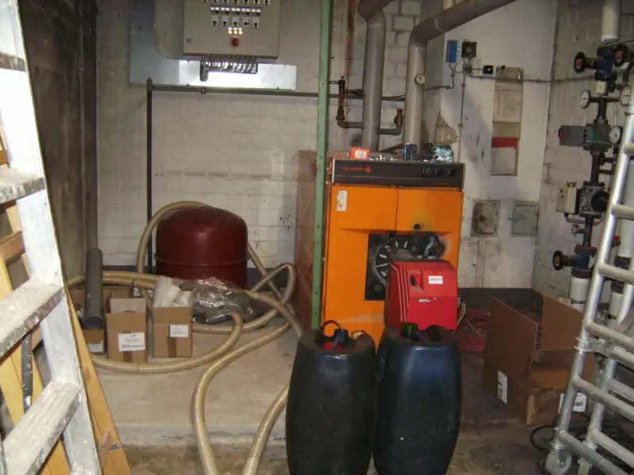

Ein Öltank ist der Teil der Anlage, der jahrzehntelang nichts tut — bis er etwas tut. Deshalb hängt am Tankschutz eine eigene Fachbetriebspflicht.
Was der Betrieb als Fachbetrieb anbietet
- Montage, Überprüfung und Abnahme von Tankanlagen
- Dichtheitsprüfung von Versorgungsleitungen
- Erstellung von Rückhaltewannen und Abmauerungen
- Schutzanstrich für gemauerte Lagerräume
- Überprüfung und Montage von Armaturen und Sicherheitseinrichtungen
Diese Liste steht wörtlich auf der Seite „Leistungen“ der bestehenden Website. Dort ist die Fachbetriebseigenschaft mit WHG § 19 l angegeben — einer Vorschrift in der alten Zählung des Wasserhaushaltsgesetzes. Heute steht die Fachbetriebspflicht in § 62 WHG zusammen mit § 45 der Verordnung über Anlagen zum Umgang mit wassergefährdenden Stoffen (AwSV). Inhaltlich meint beides dasselbe; die Angabe gehört bei einem Livegang aktualisiert.
Kurze Selbstprüfung am Tank
Haken Sie ab, was bei Ihnen zutrifft. Bleibt ein Punkt offen, lohnt der Anruf. Ersetzt keine Prüfung durch einen Fachbetrieb.

Nächster Schritt
Prüfung fällig oder Unterlagen verschwunden?
Der Betrieb ist Fachbetrieb für Tankanlagen. Ein Anruf klärt, was bei Ihrer Anlage ansteht.